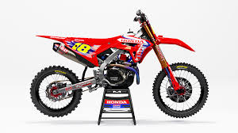

Supercross compresses a full motocross experience into tight stadium bowls. Man-made dirt brings steep triples, whoop sections, and slick bowl turns within arm’s reach of fans. Races happen under lights, which means every lap counts and track conditions change quickly as moisture leaves the surface.
250SX (East/West split) and 450SX premier class. Both run production-based four-stroke engines tuned for explosive torque.
Rhythm lanes reward timing, whoops punish poor body position, and sand sections create unpredictable ruts every lap.
Main events pay 26 points to the winner, with bonus incentives for holeshots and perfect seasons across some series specials.
Watch for clean corner exits, smooth transitions through the whoops, and how riders manage lappers late in the main. If you are new, start with the opening rounds in Anaheim—those tracks set the tone for the entire year.
Ready for more detail? Check the 2025 Season outlook, review the schedule, and dive into the rider and team breakdowns.